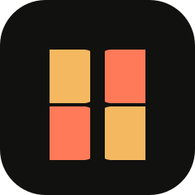

Showcase
A durable home for the build, intent, and changelog.

BESURE3D action collective / year-round exhibition
A home for ambitious game makers building worlds with weight, velocity, and a point of view. Showcase the slice. Invite the critique. Ship the next one.
01 THE CREATOR LOOP
Great games are not discovered in a pitch deck. They get found in the space between a playable build and an honest reaction.
BESURE keeps that space open: persistent project pages, structured playtests, and critique that turns into a sharper question for the next build.
A durable home for the build, intent, and changelog.
Put the work in front of humans while decisions are alive.
Capture what players felt, not just a star rating.
Find the signal and decide what earns the next slice.
02 PERSISTENT EXHIBITION
High-mobility cybernetic hack-and-slash in a submerged megacity.
Supersonic anti-gravity racing with dynamic track morphing.
Atmospheric psychological mystery through liminal monoliths.
03 THE EXHIBITION
UNICON is the recurring exhibition for playable 3D work that deserves more than a scroll-by. Drop a build, get a room of sharp eyes, and leave with a better one.
Follow the build ↗Build in public. Critique with intent.